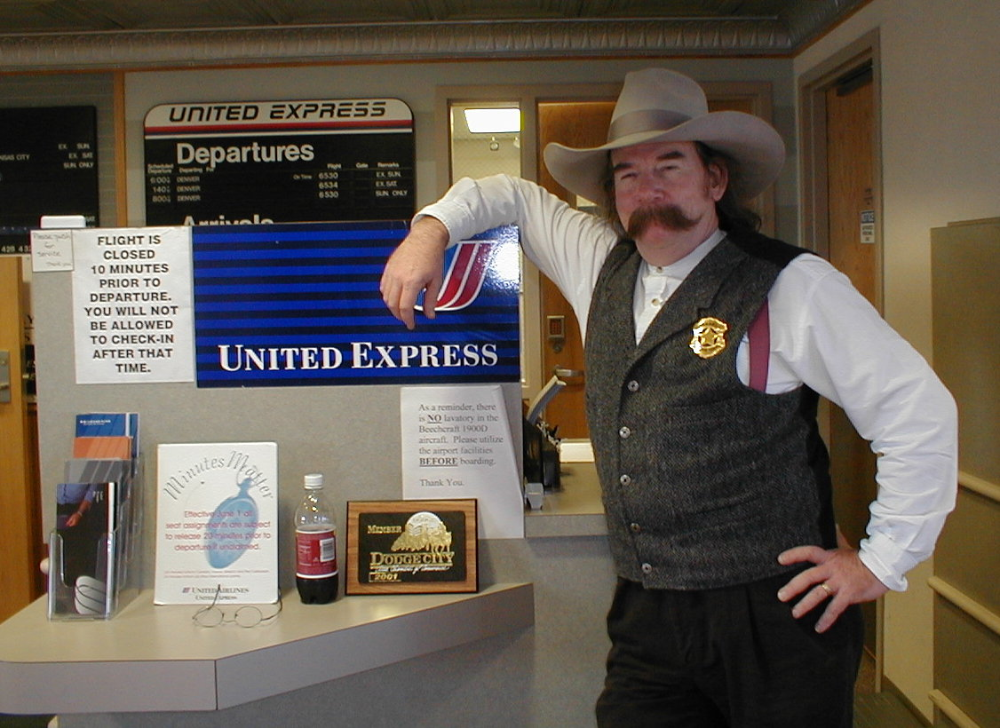

Day 21: June 2, (Indianapolis to) Dodge City, KS to Great Bend, KSPrevious Day - Home - Next Day Photo of the DayDodge City's Marshall/United Express agent, quite a character. Keegan's LogDay 21: June 2, (Indianapolis to) Dodge City, KS to Great Bend, KS Weather: Generally sunny and warmThis morning began way too early, I was up by 5:15 to catch our 7:10 plane. After we finished packing, mom took us to the airport, soon afterward we discovered that our 7:10 flight to Chicago had been cancelled due to a mechanical failure. The next flight was too late, so we were going to miss our connection to Great Bend, KS. We ended up rerouting to a plane that left Indy at 9:40, ultimately arriving in Dodge City, KS, United would then rent us a car to drive to Great Bend. This meant we would be arriving at 7:00 instead of 2:30, but we didn't really care as long as we got there. We boarded the Indy to Chicago connection at 9:40, they pulled us back from the gates, then informed us that something had gone wrong and pulled us back to the gates to inspect the frond gear. Two hours and one new front tire later (it was likely our fault, dad and I emanate some sort of aura which is bad for tires), we were back in business, we finally left the ground shortly after noon. Needless to say we had missed our next connection from Chicago to Kansas City, but we ran and boarded the next flight out without too much time to spare. We made it to Kansas city and had just enough time to pick up some lunch before boarding our plane for Dodge City. The flight to Dodge City was again on a tiny B1900 19-passenger plane. We arrived and waited for the United agent to arrange ground transportation to Great Bend, the man who arrived turned out to be the United agent/City marshal, and he looked every bit the classic marshal part, with a bushy twirled moustache and long hair under a cowboy hat. We had a lot of fun listening to his stories, and the ground transportation ended up being the passenger seats of his car. We finally made it to Great Bend, about 7 hours behind schedule, but after the way our trip started I was just happy to be here. We talked to a few other riders, apparently yesterday was a very nice ride with a light tailwind, but today was a grueling ride with a strong headwind. Tomorrow is a relatively short day to McPherson, we'll be looking forward to getting back with the group and hearing about the last two days. Phil's LogReturns to a computer screen near you tomorrow... |
{kind=link}